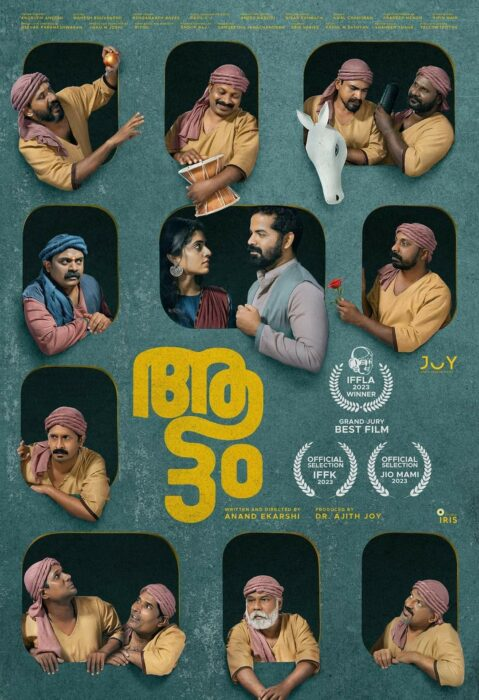

Director: ക്രിസ്റ്റഫർ നോളൻ
Review by: അനിൽ
കഴിഞ്ഞ വർഷം ധാരാളം നല്ല സിനിമകൾ കണ്ടു. അതിൽ ഒരല്പം വേറിട്ടുനിൽക്കുന്ന രണ്ടു സിനിമകളെ കുറിച്ച് ചെറുതായി പരിചയപ്പെടുത്താൻ ഒരു ശ്രമം നടത്തുന്നു.
ഒന്നാമത്തേത് ഓപ്പൺ ഹൈമർ എന്ന വിദേശസിനിമയാണ്. നമ്മൾ ബാല്യകാലം മുതൽ കേൾക്കുന്നതാണല്ലോ ഹിരോഷിമയും നാഗസാക്കിയും. അതാണെന്നെ ഈ സിനിമ കാണാൻ പ്രേരിപ്പിച്ചത്. അണുബോംബിൻ്റെ പിതാവ് എന്നറിയപ്പെടുന്ന അമേരിക്കൻ ഭൗതികശാസ്ത്രജ്ഞൻ റോബർട്ട് ഓപ്പൻ ഹൈമറിൻ്റെ ജീവചരിത്രമാണ് ഈ സിനിമ. 'ക്രിസ്റ്റഫർ നോളൻ' ആണ് സംവിധായകൻ. അണുബോംബ് പരീക്ഷണത്തിനു മുൻപും ശേഷവുമുള്ള ഓപ്പൺ ഹൈമറിൻ്റെ ജീവിതത്തിലെ ആന്തരിക സംഘർഷങ്ങളിലൂടെയുള്ള ഒരു യാത്രയാണീ സിനിമ 'Cillian Murphy' എന്ന നടൻ ഗംഭീരമായി ഈ വേഷം ചെയ്തിട്ടുണ്ട്. ഏറെ സംഭാഷണങ്ങളുള്ള അധികം സാങ്കേതികവിദ്യയുപയോഗിക്കാതെ നിശബ്ദതയെ വളരെ മനോഹരമായി ഉപയോഗിച്ച ഒരു നല്ല സിനിമ.
ആട്ടം (2023)
Director: ആനന്ദ് ഏകർഷി
Review by: അനിൽ
അടുത്തത് ആനന്ദ് ഏകർഷി സംവിധാനം ചെയ്ത 'ആട്ടം' എന്ന മലയാള സിനിമയാണ്. ഒരു നാടക സംഘത്തിലെ പതിമൂന്ന് പേരുടെ കുറച്ചു ദിവസങ്ങളാണി സിനിമ 'പന്ത്രണ്ട് പുരുഷൻമാരും ഒരു സ്ത്രീയും'. അഭിനേതാക്കൾ ഭൂരിപക്ഷവും പുതുമുഖങ്ങളായതുകൊണ്ട് ഒരു ഫ്രഷ് ഫീൽ സിനിമ നൽകുന്നുണ്ട്. പുരുഷൻ, സ്ത്രീ, നിലപാടുകൾ, സമൂഹം, ഇതൊക്കെ നന്നായി ഈ സിനിമയിൽ പറഞ്ഞു വയ്ക്കുന്നുണ്ട്. രണ്ടു സിനിമയും ആലക്കോട് ഫിലിംസിറ്റിയിൽ നിന്നാണ് കണ്ടത്. ഇതിൽ ആട്ടം എന്ന സിനിമക്ക് പ്രേക്ഷകർ തീരെ കുറവായിരുന്നു.